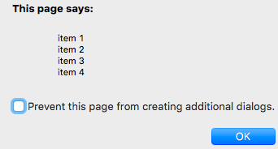
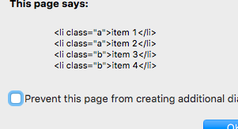
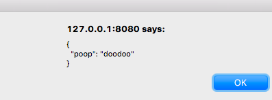
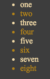
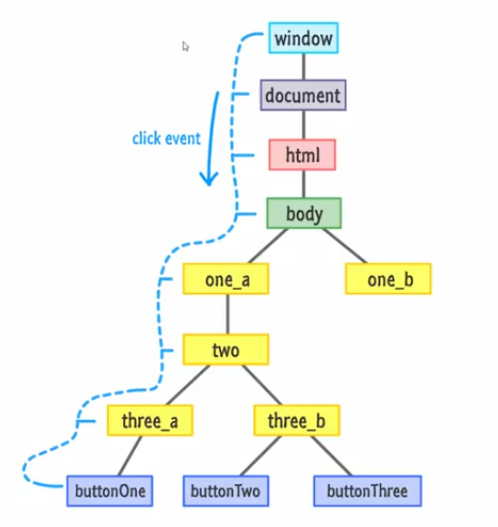
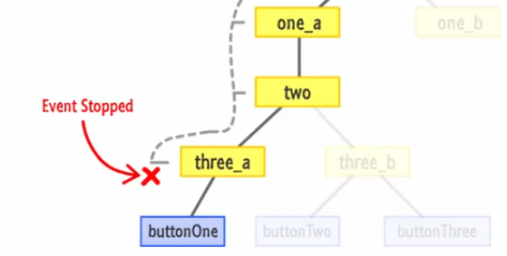
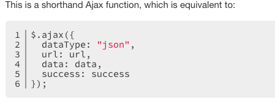
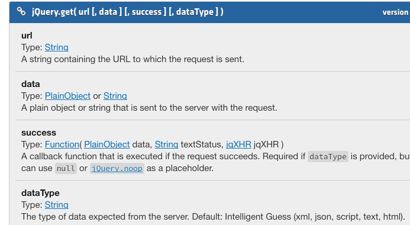

Hello
JQ Notes
Inskills jq vid 2.1
jQuery() == $();
the CSS method
Here is a p manipulated by css.
$("p").css("color", "yellow");
$("h1").css("font-style", "italic");
This can be written as a js object!
var p = $("p");
p.css(
{
"color", "yellow",
"font-style", "italic"
}
);Inskills jq vid 3
Selectors: a bit of css
header * selects what?
any descendant of a header tag
[all things WITHIN a header]
article p selects what?
all p tags within an article
p.warning selects what?
all p tags with the class of warning
Inskills jq vid 3.3
Advanced selectors which analyze the attributes
Select any element with an href attr
[href]
(of course this would be far easier simply to enter a)
"selectors" inside "[]" are referred to as:
attribute selectors
You can also use logic inside these selectors.
What would select all href tags
that are NOT http://www.google.com ?
[href!="http://www.google.com"]
what does [href^="http://www"] select?
This selects all the links that START WITH "www".
Those are for filtering 'starts'. How about selecting all links
that END in ".com"?
[href$=".com/"]
What do you use to find certain text within the link?
[href*="about"]
This finds all the links with
the text: "about".
Inskills jq vid 3.4
More Advanced selectors
Separate all selectors with a comma and you are able to...
select all of those elements on the page.
h1, h2, dt, dd, code
Separate these tags with a space:
article h2
This line is selecting
all of the h2s within the article
How about article > ul
This finds the DIRECT CHILD ul of that article-parent.
What does the plus sign do? +?
The second "argument" is selected ONLY IF it has the first "argument"
before it.
hr + div selects?
ALL the children divs that have hr directly preceeding them.
** needs explanation**
Think of this as collecting all of the children,
except the first child.
Then, there is the ~.
p ~ p selects all the paragraphs that have
AT LEAST ONE PREV sibling.
Question: How does p + p differ from p ~ p ?
StackOverflow's Cage-Match: ~ vs +
okay... Now give me the first child of a < ul> container?
ul:first-Child
last child?
ul:last-Child
Find and select all ps that are the only child of their parent?
p:only-Child
Lynda jQ essence vid2.7
Get all the < code>s and give me the length of that collection
$('code').length;
Get an array of matched DOM elements
get();
Access a single DOM element at the index of that matched set (array)
get(index);
Search for descendent elements that
match the description of a certain expression
find(expression)
$("div").find("i").css("color", "red");
Execute a function within the context of each matched element
.each(
function)
$(function() {
var opacity = 0;
$('div.ans').each(function() {
$(this).css("opacity", opacity);
opacity+= .05;
})
Lynda jQ essence vid2.9
Statement chaining
.after() method in action
< a href="www.google.com">google< /a>
< a href="www.npr.org">npr< /a>
< a href="www.reddit.com">reddit< /a>
$("a[href$='.org']").after("This is an NGO");
Lynda jQ essence vid3.0~1
Manipulating
.html() method
.text() method
.html() without params
gets html content
.html() with params
sets html content
Same goes for text()
IMPORTANT:
The main difference between html() and text()
html() will create actual html for you if you pass HTML CODE to it.
for text(), if you pass a string, like
< h1>Hello World< /h1>
entire line of code will be rendered to the page.
Given the folling...
- item 1
- item 2
- item 3
- item 4
$("document").ready(function() {
var list = $('#list1');
alert(list.text());
});

$("document").ready(function() {
var list = $('#list1');
alert(list.html());
});

text() vs html()
$(function() {
var newText = $("< h4>Hey There, World!< /h4>");
$('div').text(newText); // [object Object]
$('div').text(newText.html()); // Hey There, World!
$('div').html(newText); // Hey There, World!
$('div').text(newText.text()); // [object Object]
$('div').html(newText.html()); // Hey There, World!
})();Lynda jQ essence vid3.2: Attr Methods
.attr(name)
Find attr in matched elem. If none exists, returns undefined
.attr(properties)
Sets attr in matched elem using JSON.
$('img').attr( {
src: "images/logo2.png",
title: "New Logo",
alt: "newLogo"
})
$('img').attr("src", "images/newLogo.jpg");
.attr(key, function)
This is great for calculating [FOR ONE] attr many different
values: For example using a fn to spit out numbered images and setting
them to src!$('a').attr("target", "_blank");
This sets all links to open in a new window.
.removeAttr(name)
This simply removes the named attr of the matched element.
You can also remove a link with .removeAttr("href")
Lynda jQ essence vid3.3: inserting content
INSIDE elements
prepend()
prependTo()
append()
appendTo()
Difference between these two is very simple
.append() takes content: append(content)
.appendTo() takes a selector appendTo(selector)
.append(content) places content into the element
.appendTo(selector) appends selector to a specified set of elems.
What does this mean?
Give me the last p and append it to the first p!
$('p:last').appentTo('p:first');
REMEMBER: Target is the 'parameter' of the appendTo() method
OUTSIDE elements
after()
insertAfter()
before()
insterBefore()
after() & before() both take content
.after(content)
.before(content)
.instertAfter(selector)
.instertBefore(selector)
$('div.ans:last').insertBefore("div:first");
Lynda jQ essence vid3.4: wrapping content
The Wrap Function:
.wrap(html)
Wraps matched elems and places them EACH IN TURN
inside the html here
$('span').wrap('< div style="background-color: red">');
.wrap(element)
wraps each matched elem with specified element
.wrapAll(html)
Rather than wrapping EACH of the elems in a given tag,
this takes ALL of the matching elems and wraps them into one package
.wrapAll(element)
wraps all matched elem with specified element
.wrapInner(html)
Placeholder
.wrapInner(element)
Placeholder
.replaceWith(content)
replaces with whatever content you provide as a parameter
$('span').replaceWith("POOP");
// returns lots of "POOP"
.replaceAll(selector)
Placeholder
.empty()
removes all child nodes from the set of the elem that
you're calling it on
.remove()
Removes all matched elems from the DOM
.clone()
This just makes copies. Clones matched dom elems
.clone(bool)
If true, this will copy not just the elems,
but ALSO EVENT HANDLERS
Lynda jQ essence vid3.5: Working with CSS
.css(name)
returns the value of whatever property you name!
console.log($('span').css("font-size")); // 24.5888px
css.(properties)
uses JSON
$('span').css(
{
color: "pink",
fontsize: "3vw",
fontfamily: "Arial"
}
);All about jq class methods...
addClass(class)
Adds class you specify
hasClass(class)
Returns a Boolean! It returns TRUE if at least one of elems
has the specified class
removeClass(class)
Removes class
toggleClass(class)
adds class if not present, removes class if it is present
toggleClass(class, switch)
if the switch is TRUE, adds class. if FALSE, removes
specified class
Lynda Essentials jq vid 3.6 Data Attribute
.data()
.removeData()
Setting
data(key, value)
data(obj)
$("#test").attr("data-poop", "doodoo");
This will actually add a data- attr to the DOM.
Ordinarily, jquery's data() doesn't do that.
$('#div1').data("key1", 1234);
$('#div1').data("key2", "Beau ");
Getting
data(key)
data()
If I have:
$("#test").attr("data-poop", "doodoo");
...(added by jquery)...
And/OR if I have
< h1 id="test" data-poop="doodoo">Effluent< /h1>
Added by HTML.
Really doesn't matter
It takes a JSON object and can read it as a javascript object.
JSON.stringify($('#test').data(), null*, " ")
*null is a 'replacer element' (unnecessary)
" " spaces are for js pretty printing
This gives me:

Lynda Essentials jq vid 4.2 Events: (binding and unbinding)
EVENTS: Event handler attachments
on()
off()
toggleClass()
A nice jquery & vanilla js function
$(function() {
var t = $('#test');
t.on("mouseover mouseleave", highlight);
t.on('click',function(evt) {
t.off('mouseover mouseleave', highlight);
t.html('< p>shut down< /p>');
});
});
function highlight(evt) { //outside load fn!!
var t = $('#test');
t.toggleClass('hilite2');
}
});(These are some props available)
type click, mousedown, etc.
target The elem that triggered the event
data data passed to bind function(optional)
pageX/pageY coords of mouse at time of firing of event
result data passed by the last handler function
timestamp Time when event occurred
preventDefault() prevents browser from executing default action
isDefaultPrevented(); verifying
stopPropagation(); stops bubbling of the even to parents
isPropagationStopped();
$('div').click(function(evt) {
$(this).html(
'pageX: ' + evt.pageX +
'< br>pageY: ' + evt.pageY +
'< br>type: ' + evt.type +
'< br>target: ' + evt.target );
});put this against a div and it will record clicks and details about the event
Events: Lyn jq essentials vid 4.5: Misc Events
$(selector).one(type, data, handler)
Works much the same as bind() but is only ever executed once
for each of the matched elems that the event is bound to.
**Used only if you want the event to happen once. --Click
again and it will not respond.
$(selector).trigger(event, data)
$(selector).triggerHandler(event, data)
These last two execute or "trigger" events from within your code--
AS IF USER has triggered it ( with "click", "Mouseover" , etc.).
These both influence the concomitant behavior of the browser.
trigger() can make browser "pretend" as though it has been
clicked (or other event).
triggerHandler() triggers event WITHOUT simulating browser
functions
practical events ch 4.6: hover() & "Event Delegation"

I want to hit every other li in a < ul> tag
with a .hilite class.
What jq do I use?$('ul li:even').addClass('hilight');
hover event takes two args
.hover(
function () {when mouse enters
},
function () {when mouse leaves
});
$(function() {
$('li').hover(function() {
$(this).toggleClass('hilite');
}, function () {
$(this).toggleClass('hilite');
})
});
ch4.6 @ 4:00 [js event Delegation]
Event Delegation:
It's very simple.
The list above is a ul of eight < li>s.
If I attach a click event to each < li>,
$('li').on('click', function(evt) {
alert("clicked");
})
this will be a burden on the processor and bad perf.
Instead, I simply attach a click event to the parent < ul> and then delegate the "triggering" to the child element.
ONE CLICK EVENT... listens for click-events on the list items.
$('ul').on("click", 'li', function(evt) {
alert("clicked");
});
Only handle events when they come from list items.
Bubbling 101
Browsers take care of this automatically.
When an element is clicked and there isn't a handler on that element
the action "bubbles up" to the parent.

Events always begin at the root.
They travel down to the "leaf" or place where the event is attached.
This touches every single HTML elem along its path.
This is known as the "capturing phase" or "Phase I".

The "bubbling phase" or "Phase II" is when it travels upward.
var clickbutton = document.querySelector("#myButton");
clickbutton.addEventListener("click", showAlert, true);
True means: Capture (phase I)
False means: Bubble (phase II)
This is important because every node in this tree "overhears" the event. And
if there is an event listener on any one of those nodes, they can trigger an action.
So... Therefore we need
stopPropagation()function handleClick(evt) {
evt.stopPropagation();
}
This stops the event in EITHER PHASE that it's currently in.
Lynda Essentials jq vid 5.1 hiding and showing animation effects
SHOW HIDE TOGGLE
show();
show(speed, callback);
Specifies speed &
Fires an optional callback AFTER completion
hide();
hide(speed, callback);
Fires callback AFTER completion
toggle();
toggle(switch);
TRUE shows all, FALSE hides all
toggle(speed, callback);
Fires callback AFTER completion
$(function() {
var box = $('#box'), show = $('#show'),
hide = $('#hide');
show.on("click", function() {
box.show("slow", function() {
alert("complete!")
}); // callback
});
hide.on("click", function() {
box.hide("slow");
});
});
Lynda Essentials jq vid 5.2 Fading
Fadein FadeOut FadeTo
fadeIn(speed, callback);
gives speed &
Fires an optional callback AFTER completion
fadeOut(speed, callback);
Specifies speed &
Fires an optional callback AFTER completion
fadeTo(speed, opacity, callback);
Fires callback AFTER completion
vid 5.3 Sliding
slideDown(speed, callback)
gives speed & fires callback
slideUp(speed, callback)
gives speed & fires callback
slideToggle(speed, callback)
gives speed & fires callback
CSS Relevance:
display:none will not be available in the page and does not occupy any space.
visibility:hidden hides an element, but it will still take up the same space as before. The element will be hidden, but still affect the layout.
Lynda Essentials jq vid 5.4 Animate()
animate() stop()
animate(
params, duration, easing, callback);
params: Elem properties to animate
duration: in milliseconds
easing: "linear" or "swing"
callback: fn to fire upon completion
animate(
params, options);
params: Elem properties to animate
options: an object set in obj notation-style(see below)
stop();
stops animation
Object Notation Example:
multibtn.on("click", function() {
box.animate({
marginLeft: "20vw",
fontSize: "4vw",
opacity: "0.2"
}, 4000);
});
Set a css style for a div (whose class is "poop") that is contained inside a div with the id of "dog".
#dog div.poop { color: "red"}
VII. Lyn JS & JSON vid 3.3 jquery & JSON
These are not what you call...
These are what get called for you when something interesting happens
during the lifecycle of an ajax request.
- .ajaxComplete()
- .ajaxError()
- .ajaxSend()
- .ajaxStart()
- .ajaxStop()
- .ajaxSuccess()
For example: You may wish to use ajaxStart() and .ajaxComplete() to print to the page
info to let user know that an ajax request is happening so "pls be patient...".
$(document).ready(function() {
$(document).ajaxStart(function () {
console.log("AJAX starting");
});
$(document).ajaxStop(function () {
console.log("AJAX request ended");
});
$(document).ajaxSend(function () {
console.log("About to request data...");
});
$(document).ajaxComplete(function () {
console.log("Everything's finished!");
});
$(document).ajaxError(function (evt, jqXHR, settings, err) {
console.log("Hmmm. Seems like there was a problem: " + err);
});
$(document).ajaxSuccess(function () {
console.log("Looks like everything worked!");
});
The meat of the request begins here
getData();
});
function getData() {
$.get("testdata.txt", successFn);
}
function successFn(result) {
console.log("Setting result");
$("#content").append(result);
}
function errorFn(xhr, status, strErr) {
alert(strErr);
}
Lyn JQ Essentials: vid 8.3 Jquery's datatypes:
an ajax call to flickr
Dealing with data coming back from the server.
It may be JSON or XML or binary format...etc.
$.getJSON()
$(document).ready(function() {
getJSONData();
});
function getJSONData() {
var flickrAPI =
"http://api.flickr.com/services/feeds/photos_public.gne?jsoncallback=?";
$.getJSON(flickrAPI, {
tags: "space", - this is the topic "tag" content
tagmode: "any",
format: "json",
},
successFn);
}
function getXMLData() {
}
function successFn(result) {
$.each(result.items, function(i, item){ -- i is "index"
$("< img>").attr("src", item.media.m).appendTo("#content");
- jquery's html constructor
if (i == 4) { - limits the num of photos to come back
return false; - tells $.each() iterator to stop running
}
});
}
function errorFn(xhr, status, strErr) {
alert(strErr);
}
Lyn JQ Essentials: vid 8.2 Jquery's Ajax Helper methods
Some Methods that help with common tasks when using ajax
- $.get() - loads data from server with an HTTP GET request
- $.load() - loads data from server and places html into matched selector
- $.getJSON() - loads json data from server with http GET request
- $.post()- loads with a POST function (to manipulate data)

with simple get();
$(document).ready(function() {
getData();
});
function getData() {
$.get("testdata.txt", name of successFn)
}
function successFn(result) {
console.log("setting result");
$('#content').append(result);<--appending content to selector
}
function errorFn(xhr, status, strE rror) {
console.log("There was an error");
}
This is so common that jquery gives you a shorthand to accomplish this entire task
with load();
$(document).ready(function() {
getData();
});
function getData() {
$('#content').load("testdata.txt")
}
function successFn(result) {
console.log("setting result");
}
function errorFn(xhr, status, strE rror) {
console.log("There was an error");
}
Lyn JQ Essentials: vid 8.1 Jquery's Simple Ajax method
Basic jq Ajax call format
- url
- type
- datatype
- success
- error
$(document).ready(function() {
getData();
});
function getData() {
$.ajax({
url: "testdata.txt", //this example's local path
type: "GET",
datatype: "text",
success: successFn,
error: errorFn,
complete: function(hxr, strErr) {
console.log("Request is complete")
}
});
}
function successFn(result) {
console.log("setting result");
$('#content').append(result);
}
function errorFn(xhr, status, strE rror) {
console.log("There was an error");
}